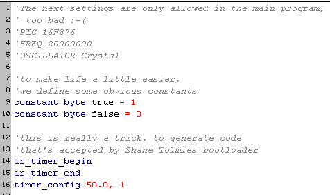
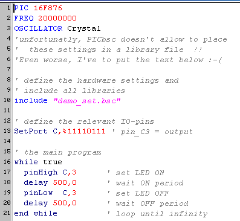

January, 2005
PICbsc examples
MainIndex
Introduction
The general settings, used for all the demos are stored in the file "demo_set.bsc".
Unfortunatly, PICbsc requires that some settings are at the top of the main file.

Blink a LED
